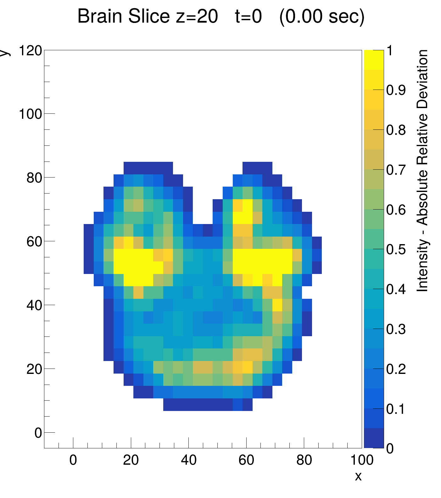
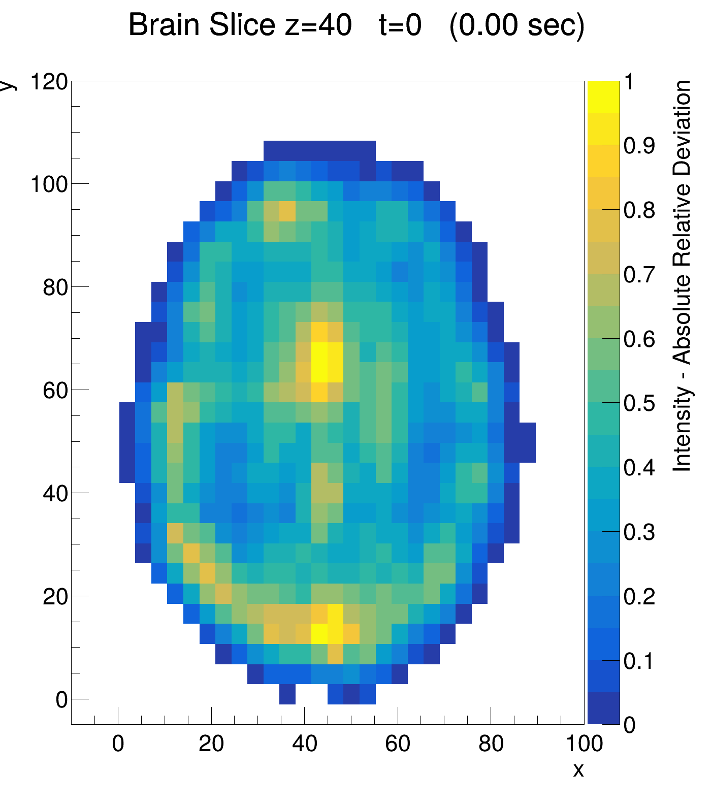
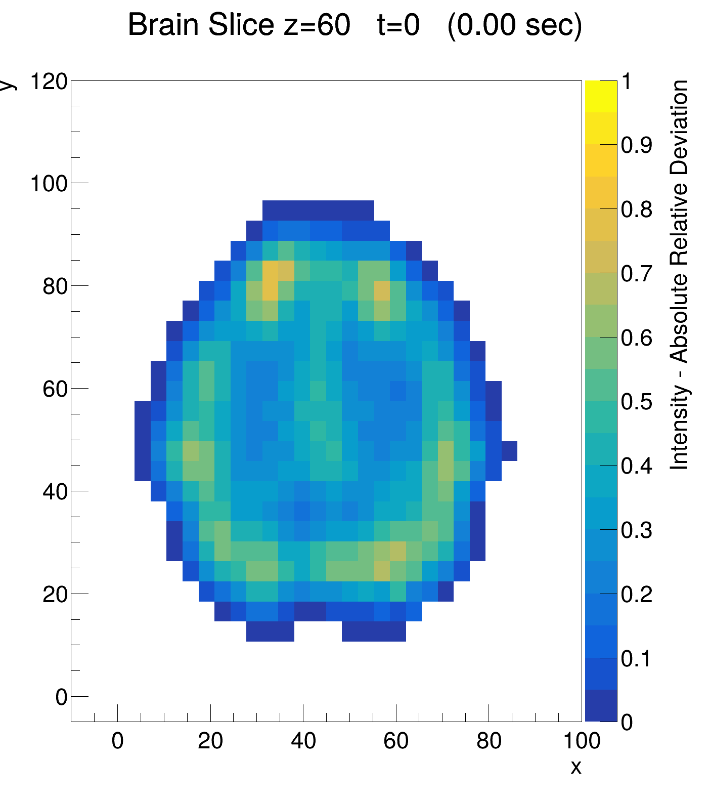
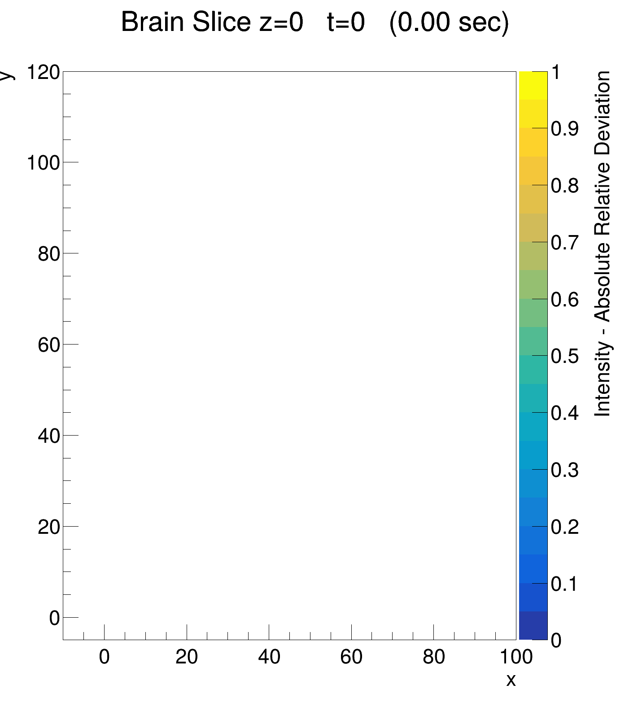
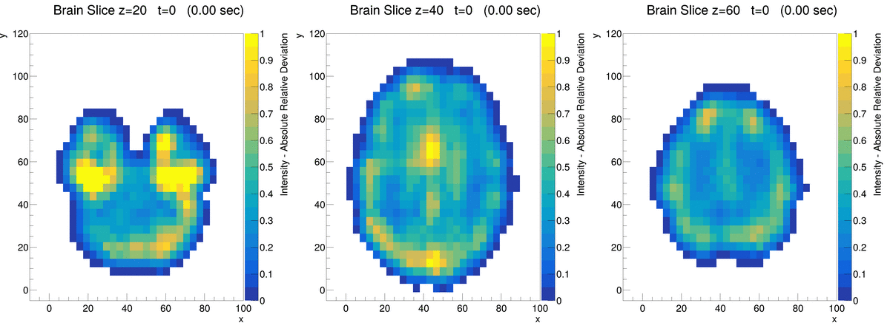

|
The purpose of this project is to visualize fMRI data representing brain activity in the Default Mode Network (DMN). This report presents two main visualizations: one where time is held constant while varying spatial coordinates, and one where spatial coordinates are held constant while varying time. Brief theory Magnetic Resonance Imaging (MRI) is a medical imaging technique that utilizes strong electromagnetic fields to produce detailed images of the body's internal structure, with excellent contrast between different tissue types [1]. In functional MRI (fMRI), a series of scans are collected over time to measure changes in blood flow and oxygenation levels related to neural activity [1], known as the BOLD signal. From fMRI data, distinct networks of brain regions can be identified, each associated with different types of activity. One network of particular significance is the Default Mode Network (DMN), which is active during rest, daydreaming, and mind wandering. Research on the DMN has revealed a great deal about how large-scale functional brain networks are organized [2]. This project presents some simple visualizations of DMN fMRI data. The visualization will illustrate both how MRI produces images of the brain's internal structure and how the BOLD signal varies over time within the DMN. Preprocessing steps The raw fMRI data is stored in a NIfTI (.nii) file, with dimensions x, y, z, and t. Each voxel contains the recorded activity level at a given spatial location and time point. The voxels represent a spatial resolution of 2 mm$^3$ and the time resolution is 0.72 seconds between each scan. Using the Python package NiBabel, the data was sampled and converted to a text file (CSV). Including all data points would result in a file of several GB, which is excessive for this project. A sampling interval of 2 was therefore applied along the x, y, and z axes, and the time axis was truncated to the first 42 time points. This corresponds to approximately 30 seconds of scan data. The text file was next converted into a ROOT file, using the TTree structure which is efficient for plotting in ROOT. Histograms at constant time This section presents two-dimensional histograms of brain slices, where color encodes activity level. Three representative z-values are shown before a scrolling animation is displayed. The x, y, and t coordinates are held constant throughout. The script plot_2Dhist.C allows the user to input a z-value interactively; however, for the purpose of generating this report, fixed z-values were used.    Figure 1: Brain slices at different z-values, t=0. Figure 1 shows brain cross sections at z = 20, 40 and 60 for time t = 0. The colorbar indicates the absolute relative deviation from the mean activity level, calculated as: $$ \bar{I} = |\frac{ I - \text{Global mean}} {\text{Global mean}} | \cdot 100 $$ where $I$ is the voxel intensity and the global mean is taken over all voxels and all time points. Yellow zones indicate voxels whose intensity deviates most strongly from the global mean, regardless of direction. Blue zones are close to the global mean intensity. To compensate for reduced spatial resolution due to sampling and to produce smoother plots, intensities were averaged over nearby slices and ROOT's built-in smoothing function was applied. Scrolling through all brain slices The animation in Figure 2 shows the z coordinate increasing with each new frame. This creates the effect of scrolling through the brain volume, similar to the slice-by-slice visualization used in CT imaging.  Figure 2: Scrolling animation of brain slices at t=0. Histograms with time evolution The following animations incorporate the time dimension to show how activity changes over time at fixed spatial locations. The z-values 20, 40, and 60 were chosen to match those shown in Figure 1.  Figure 3: Time evolution of brain slices z=20, 40, 60: In Figure 3, some regions show notably higher deviation from the mean than surrounding tissue. For future projects, it would be interesting to investigate whether these regions correspond to areas know to be active during DMN. If there was more time for this project, a better normalization strategy would be beneficial. The method used here divides by the global mean intensity across all voxels and time points. While this highlights voxels that deviate strongly from the overall average, it does not capture the temporal dynamics within individual voxels. A more suitable approach for detecting BOLD activation would be to normalize each voxel's time series by its own temporal mean, giving the relative signal change over time for that voxel. This would make it possible to observe how individual brain regions fluctuate around their own baseline, which is the gold standard in fMRI activation analysis. References [1] Kamel, R. J. (Ed.). Fundamentals of Medical Physics: Principles and Applications. 1st ed. AkiNik Publications, 2024. DOI: https://doi.org/10.22271/ed.book.2841 [2] Menon, V. (2023). 20 years of the default mode network: A review and synthesis. Neuron, 111(16), 2469-2487. https://doi.org/10.1016/j.neuron.2023.04.023 |